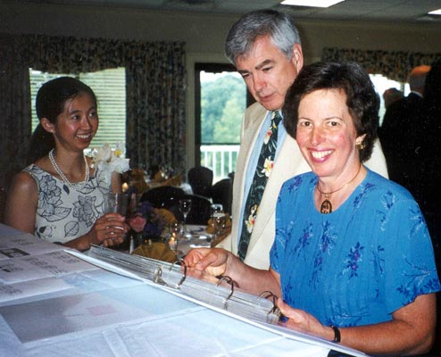

| Rebecca and Mark's Wedding Pennsylvania |
Pennsylvania Wedding Pictures | ||
|
We have a number of pictures of the Pennsylvania reception, currently they are all from Anne's camera. All of the pictures are captioned and cross-referenced with the guests that came, so they may help you identify someone whose name you forgot. Please do send us pictures from the celebration that you would like to add: we are happy to add more. The following pages organize the pictures in groups of nine. This allows you to view them in manageable chunks and reduces the time to look at any page. If you have real performance problems with your internet connection, you can either disable automatic picture loading and just click on the pictures you want to see, or you could load all the pictures at once (which could take quite a while) but then everything else should go quickly. Enjoy the pictures! |  | |